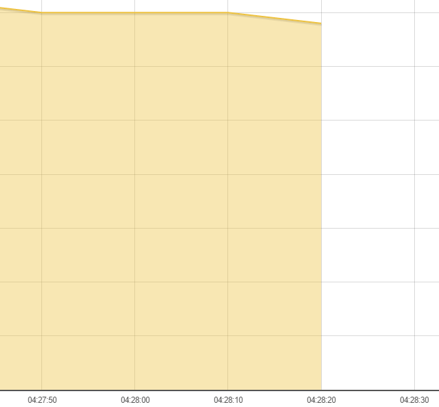
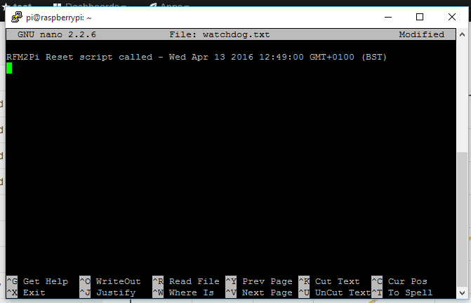
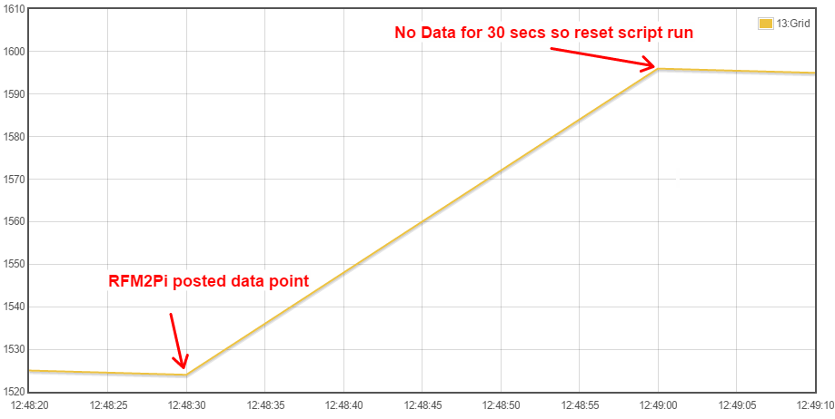

My emoncms feeds stopped again at 04:28:20 this morning, and the only feeds continuing to update since, are 33 & 34 which are fed to emoncms via MQTT on node 30.
I've attached a shortened emoncms.txt, and also emonhub.txt (both logfiles), but I can't see anything obvious.
Wondering if this is a hardware issue...

It's a 868mHz RFM69Pi board that's fitted (purchased Aug 2015), and by changing emonhub to log in DEBUG, and a emonhub restart, I can see that it is starting OK at the correct 38400 baud rate, and no errors, despite the feeds still not updating & no other activity shown in the log.
There are 3 separate RF modules feeding the RFM12Pi, two of them are within 4mtrs of the pi with good signal strength.
2016-01-15 09:58:38,418 INFO Opening hub...
2016-01-15 09:58:38,419 INFO Logging level set to DEBUG
2016-01-15 09:58:38,419 INFO Creating EmonHubEmoncmsReporter 'emonCMS'
2016-01-15 09:58:38,421 INFO Set up reporter 'emonCMS' (buffer: memory | size: 1000)
2016-01-15 09:58:38,422 INFO Setting emonCMS url: http://localhost/emoncms
2016-01-15 09:58:38,423 INFO Setting emonCMS apikey: set
2016-01-15 09:58:38,423 INFO Creating EmonHubJeeInterfacer 'RFM2Pi'
2016-01-15 09:58:38,425 DEBUG Opening serial port: /dev/ttyAMA0 @ 38400 bits/s
2016-01-15 09:58:42,433 INFO RFM2Pi device firmware version: [RF12demo.12]
2016-01-15 09:58:42,435 INFO RFM2Pi device current settings: O i15 g210 @ 868 MHz q1
I can only get the feeds back working again by a reboot, and despite a few early warning messages in the 'emonhub log after reboot.txt' it soon settles down and everything's fine.
I've just stripped down the pi, and checked for any obvious soldering issues on the RFM69Pi board, and re-attached it.
Paul
Re: Feeds stop updating
You are right there isn't really anything in the logs to highlight an issue. Leaving emonhub loglevel at DEBUG rather than WARNING will give you the best insight into what happened, since there are no warnings in emonhub.log I suspect the data stopped coming in from the serial port, whether that is a hardware, firmware or serial port issue in Jessie I wouldn't like to say. It's unlikely (but not impossible) to be emonhub as there should be a warning logged if it couldn't read the serial port.
Am I right in thinking all but node 30 are remote "RFM" modules and all but node 30 stopped updating?
When you say reboot do you mean a soft restart (sudo reboot or sudo shutdown -r now) or a full power cycle?
Dit you notice any led flashing on the rfm2pi when no data was being received?
See the (rather long) "RFM12PI receiver goes hard down sometimes" thread, it is predominantly about the rfm2pi "locking up" where it stops passing data and only a reboot will "restart it", The reason there is the power cycle resets the rfm2pi. Towards the end there are some posts that suggest the board is actually still working but it has forgotten it's group and so the data isn't considered valid and discarded, the reset, in this instance would revert things back to default and kick start things off again for most users.
There is a reset script I attached there too which can prove a point whether the data is "kick started" by the reset or the reboot.
I recommend installing the reset script and testing it works while you know everything is good and you can see the expected effect. if you tail emonhub.log in another ssh window you can see the rfm2pi start up text etc, there is no need to stop emonhub for resetting the rfm2pi.
If/when this reoccurs, first check the led then try setting another group in emonhub.conf, save, set it back to 210 again and save, observing this in the log this will prove that emonhub is still running correctly (responsive) and the serial port comms are still open. If reseting the frequency, group and baseid (if you change any one all of them will be checked and corrected automatically) doesn't get things going, use the reset script and see where that leaves you.
The rfm2pi firmware has been recompiled with the latest JeeLib revisions, it is in the repo prefixed with v13 (thats just an id it is v12+ really) but if you just proceed straight to a new firmware you will not know if it was definitely that and then whether it's fixed or not. the tests above should help locate the source of the issue and then if it is the rfm2pi at fault the firmware update can be done and monitored again.
It's a shame the events module isn't available!! can you set up a node-red event to notify you if no data arrives from the RFM nodes for a set time?
Paul
Re: Feeds stop updating
Am I right in thinking all but node 30 are remote "RFM" modules and all but node 30 stopped updating?
Yes that's correct.
When you say reboot do you mean a soft restart (sudo reboot or sudo shutdown -r now) or a full power cycle?
sudo reboot - soft restart
Dit you notice any led flashing on the rfm2pi when no data was being received?
I'll check next time!
can you set up a node-red event to notify you if no data arrives from the RFM nodes for a set time?
Yes, I have that already, but at 04:28 it's well down my agenda!!
Thanks for the comprehensive & helpful reply, I'll install the reset script tomorrow and see where that takes me.
Paul
Re: Feeds stop updating
Well the "soft restart" makes me a little less confident about the similarities to previous instances, however despite that I still think this is the most likely cause at this point and definitely still the best way to gather more intel on what's what.
The restarting of the Pi and therefore emonhub, without a power cycle reseting the rfm2pi would still correct any setting's anomalies as emonhub initially checks the returned "current configuration" from the rfm2pi and makes any changes if required.
Plus, everything discussed here and the other thread relates to Raspbian Wheezy so there may be subtle differences with Jessie. So if you could note whether you get a single longer LED flash on the rfm2pi at power-up, soft reboot of the Pi or restarting emonhub as well as when using the reset script that could help too if it's rfm2pi related.
Paul
Re: Feeds stop updating
Thanks Paul, as I have 2 Pi's running emoncms, I've switched the RFM2Pi boards, as well as installing the reset script on both Pi's.
Both Pi's have run impeccably for the past 8hrs, but a watchdog will let me know if either pi stops updating it's feeds.
Paul
Re: Feeds stop updating
I'm guessing you have switched the rfm2pi's over to see if the issue stays with the Pi or moves with the RFM2Pi. If the fault doesn't occur it maybe just a "difference" rather than a resolution, the rfm2pi's may have slightly different firmwares or the Pi's configured slightly different, are they both running Jessie? both fully updated? both the same model pi? As a faster processor or more ram may affect timings, as may a different software stack, etc.
Personally, I would've been tempted to leave it as it was until I had more info, but I guess you can just as easily switch back if it resolves and you still wish to get to the bottom of it.
Paul
Re: Feeds stop updating
Well it seems that the problem has moved with the RFM2Pi.
The original Pi has continued to run OK with no interruptions, whilst the Pi fitted with the suspect RFM2Pi module has stopped twice since swapping it.
On each occasion there is no activity taking place in the emonhub log, and the RFM2Pi LED stops flashing.
If I run the reset script, I get a longer LED flash initially, followed by the normal regular short flashes, and then the RFM2Pi module works normally.
The module was purchased Aug 2015, so I assume that the firmware would be reasonably up to date, but maybe it's worth trying upgrading the firmware first, but if it still persists I assume it has an intermittent hardware fault, and maybe needs replacing. (I've checked for dry joints etc, and can't see anything obvious).
Paul
Edit - Firmware now updated
Re: Feeds stop updating
Darn'it! I wish I had seen your post before you updated, I would really liked to have known the "current configuration" to try and determine if that is the root cause.
I hope it is fixed with the update, please keep us informed. The other thread just went cold without any indication if updating the firmware cured it or users just gave up trying to fix it!!
Did you use the "V13_...." version?
Paul
Re: Feeds stop updating
I used this guide to update.
Paul
Re: Feeds stop updating
Well as far as I can tell that hex file was created 12months ago
The V13 i refer to was compiled 8mths ago using the "updated jeelib libraries" as Glyn had noticed an issue and that JeeLib had been updated so he recompiled for test.
However in july 15 (6 mths ago) I submitted a fix for a issue that caused the config to fail and inturn the rfm2pi to appear to fail. this doesn't appear to have been compiled, as far as I can tell.
There do seem to also be a "pulse" version (3mths ago) which does have the fix I submitted and also a "DS18b20_pulse" version (2mths old) which also has the fix.
So I guess the one that was valid when that wiki guide was written has not been kept upto date.
The V13 is technically the latest compiled version of V12.
The version you really want is not there (compiled)
you could try either of the later sketches, both should work but as they are development versions I cannot be sure.
I would probally (well in fact I usually do) compile my own but you could just use the command
$ avrdude -v -c arduino -p ATMEGA328P -P /dev/ttyAMA0 -b 38400 -U flash:w:V13_RFM69CW_RF12_Demo_ATmega328.cpp.hex
from the same folder, IF the other users saw a change you should too, else you should try a later version.
Paul
Re: Feeds stop updating
Thanks Paul, - V13 version now installed successfully, so lets see if it keeps running.....
Paul
Re: Feeds stop updating
Erm.. no it doesn't!
It stopped a couple of days later and wouldn't restart with a reset or reboot this time, so I tried resoldering the joints on the RFM69 & the connector strip, refitted it, and it started working again.
I then froze it with some freezer spray, and tapped it with a screwdriver and it continued to function OK.
...but since then it has stopped a further twice.
Unless anyone has any further suggestions, I'll assume it's a board fault and it's time to replace it.
Paul
Re: Feeds stop updating
I'm guessing "reset or reboot" is trying the reset script and then a soft/warm reboot, but not a power cycle?
Removing the board for resoldering and refitting it is a very definite power cycle and it was most probably that action that got it moving rather than the resoldering as it has faulted again twice.
Each time I have tried the reset script it has worked no matter what, but there were some reports of the reset script not "reseting" in the other thread but there was not enough information to establish if the script needed tweaking or the device truly couldn't be reset or even if it was definitely "not reseting" as there was a question over expected led activity.
We also now have a change in symptoms since updating the firmware, previously the reset script worked and since the update it doesn't, perhaps a longer pulse may help but I'm not sure of the link since the bootloader or physical components aren't changed. but a change is good as that may signify it's less likely to be hardware.
What I am trying to determine is exactly what is reviving the RFM2Pi and we are currently somewhere between a soft reset via the script and totally dismantling from the Pi. Next time it occurs could you try
1) try reset script
2) try soft reboot
3) physical reset of the RFM2Pi - unfortunately there is no reset button nor is there an exposed programming header to attach a couple of wires to, so unless you tack a couple of short tails to the topside of the 10 way gpio connector beforehand, you will need to resort to a paper clip or short piece of wire to ground the reset line (GPIO4) pin 7 of the Pi's connector, with the board still connected and the Pi powered to just give it a reset but not a power-cycle.
4) If it still non-responsive then remove and refit the RFM2Pi while the Pi is live - This will power cycle the RFM2Pi without powercycling the Pi at the same time. This is safe to do as long as you are careful about realigning the pins, only if the board goes back on the wrong pins is it likely to cause problems.
Obviously only try these steps if you are comfortable doing so, I have done these tests myself in the past whilst trying to diagnose or simulate various issues and have never had any problems.
Since the symptoms changed with the update I am fairly confident that we maybe able to resolve the issue, either by recompiling a new firmware with the later fix as I previously mentioned, by adding a watchdog perhaps and/or tuning the reset script so that even if the issue is a little deeper rooted in the firmware or even an occasional hardware glitch a watchdog in emonhub can reset the board.
Paul
Edit - I have just looked at the repo and discovered that V13 was compiled on 11th june and on the 13th of june there was a commit to "add 'OK' back in, add LED startup indicator with delay and invert LED function" so there is a strong possibility that the V13 firmware does not provide a start up flash after a reset. How are you confirming it hasn't reset? just by the lack of a longer led flash or by other means too ?
I think will look at recompiling the firmware to a known standard so that we know where we are when I get a chance. In the mean time if you do get any more occurrences the confirmation steps above would be helpful but you will need to keep the emonhub log open rather than watch the led.
Re: Feeds stop updating
I have recompiled the existing (latest) rfm2pi sketch with the latest JeeLib and Arduino libs for you to try.
I have not made any major changes other than change the initial 1s LED flash to 5 rapid flashes lasting 1s (easier to spot a flashing led) and changed the default behaviour of the help text so that using "h" or "?" will give you the fll help text but any "unknown" commands will only result in a "Invalid input - use 'h' or '?' for help" message which emonhub will (currently) discard behind the scenes as was originally intended.
The full help text is no longer printed at start up either.
I have loaded and briefly checked it works but since it is predominantly the same code, I don't expect any new issues and if it doesn't fix the one you have, then we can try adding some changes or a watchdog etc.
you can load it the same way as you used above just change the end of the avrdude command to point to this downloaded hex.
Please try the reset script again to be sure it works ok with this sketch, I see no reason it shouldn't but it's best to be sure before you try and use it in a fault condition.
Paul
PS For info - It's baud is 38400, it has RF69_COMPAT 1 set for the rfm69 and it's defaults are baseid 15, group 210 and freq 433 but emonhub should change it to 868 on start-up if set in emonhub.conf.
Re: Feeds stop updating
Thanks Paul, I think that the update failed (see attached txt) - possibly due to your file being corrupted by being handled by Windows. (I just get a 1 second flash still after a reset).
Any chance of dropping it in your git account?
Paul
Re: Feeds stop updating
Oops try that! works for me using
wget http://openenergymonitor.org/emon/sites/default/files/rfm2pi.ino_.standard.hex_.txt -O rfm2pi.ino.standard.hexavrdude -v -c arduino -p ATMEGA328P -P /dev/ttyAMA0 -b 38400 -U flash:w:rfm2pi.ino.standard.hex
(stray underscores added by uploading to OEM and ".txt" removed by wget)
Paul
Grrrrrr! now the site is automatically cropping the full url to a shortened link
I can't seem to get the full url to display in the post. I have updated the original file with non-windows line endings and to avoid them being added at the other end i use wget [oem url for the hex file] -O [original filename].
Re: Feeds stop updating
I still cannot get it to update - txt attached.
I get the same if I run as sudo.
Just tried a reset again, again got a 1 second LED blink.
Paul
Re: Feeds stop updating
How old is the "autoreset" script used by avrdude on your setup? the reset timing for avrdude v6.1 is now 0.3s where as the older v5.11 avrdude required a 0.12s reset timing.
see "Solved: avrdude-original: Using autoreset DTR on GPIO Pin 7"
Paul
Re: Feeds stop updating
Paul, changing the autoreset script to v5.11 avrdude did the trick and the firmware update went ok without error.
However, the RFM2PI module started with 5 rapid flashes (as predicted) followed by a blink every 5 seconds or so which looked healthy, but am now getting a communication error;
pi@raspberrypi ~ $ tail -f /var/log/emonhub/emonhub.log
2016-02-02 10:27:20,713 INFO Set up reporter 'emonCMS' (buffer: memory | size: 1000)
2016-02-02 10:27:20,720 INFO Setting emonCMS url: http://localhost/emoncms
2016-02-02 10:27:20,722 INFO Setting emonCMS apikey: set
2016-02-02 10:27:20,723 INFO Creating EmonHubJeeInterfacer 'RFM2Pi'
2016-02-02 10:27:20,725 DEBUG Opening serial port: /dev/ttyAMA0 @ 38400 bits/s
2016-02-02 10:27:22,730 WARNING Device communication error - check settings
2016-02-02 10:27:22,731 INFO Setting RFM2Pi frequency: 868 (8b)
2016-02-02 10:28:02,836 INFO Setting RFM2Pi group: 210 (210g)
2016-02-02 10:28:03,838 INFO Setting RFM2Pi quiet: 1 (1q)
2016-02-02 10:28:04,841 INFO Setting RFM2Pi baseid: 15 (15i)
My settings in emonhub.conf are;
# This interfacer manages the RFM2Pi module
[[RFM2Pi]]
Type = EmonHubJeeInterfacer
[[[init_settings]]]
com_port = /dev/ttyAMA0
com_baud = 38400
[[[runtimesettings]]]
group = 210
frequency = 868
baseid = 15
The RFM2Pi module is 868mhz and group/baseid look ok. Tried a 'reset', soft & hard boot.
Paul
EDIT - Reverted back to stock firmware for now - and I'm back working again
Re: Feeds stop updating
I have just changed that file again (3rd time lucky???) turns out I had compiled it for a 16MHz board not a 8MHz board, it's my own fault as when I changed PC's last year and setup the new dev env with the new >1.6.4 Arduino IDE I didn't set up the odd-ball board that is the rfm2pi, instead I have just been using a 16MHz device to dev on. This has never presented an issue before as I do not normally deal with hex files as I compile each time. anyway enough excuses !!!
I have fully tested loading this to a standard 8MHz RFM2Pi via avrdude on a Pi (although I use v6.1 the link I gave results in a timing change and the use of v6.1 despite the original "fix" being to downgrade to v5.11), it works as originally intended, apologies for the hiccups!! I just hope it achieves something after all this !!! Something besides forcing me to do what I should of done sometime ago that is :-)
Paul
Re: Feeds stop updating
Paul, Yes back working with your new compiled version, no errors in emonhub log and it flashes 5 times on a reset.
The first time I tried to install the revised file, I got errors again, but think that I had somehow downloaded the file which I tried before (server delay??) after a few minutes, I repeated the process and got your updated file.
All good now, I'll keep you updated how it goes.
Thanks
Paul
Re: Feeds stop updating
I have very similar issue (noticed first in October) that began this thread:
I found the hard reset thread a few months back, but haven't done anything yet including try the reset script. I enabled debug mode and restarted the pi this morning. I will update with that log when the feed goes dark.
I have made no firmware or software updates to the system since configuring it (Sep 2015) so I am open to help find the root cause if that is still of interest. Otherwise, it looks like Paul may have had luck with this firmware update and I should update to that?
Thanks
Josh
Re: Feeds stop updating
Mines still running fine with pb66's new firmware (5 days now) but probably too early to be conclusive... Paul
Re: Feeds stop updating
Way too early to be conclusive I feel :-)
Having said that I am quietly confident or maybe it's just hopeful optimism, who knows?
@Paul - thanks for trying this and for keeping us posted. I have suggested Simon (Bramco) tries it as he is possibly having related troubles but he isn't so keen, perhaps if your system continues without fault he will, so please keep us up to date, I have my fingers crossed as this issue has been around a while.
@Josh - if you are willing to try it then great, however there are no major changes to the firmware, just re-complied with the latest JeeLib and inclusion of a previous "0i" bugfix. I have tidied the help text prints to be more "serial stream friendly" but the intention here was more to ensure we are on a known version so that we can move forward with debugging any outstanding issues rather than suggest this will definitely fix anything directly,
As I see it there is nothing to lose as it is basically the same firmware so there are no major changes to break anything, but potentially it could give us a fix or at the very least a known status from which to achieve that.
let us know how you get on if you do.
Paul
Re: Feeds stop updating
I thought it may be wise to point out in case anyone wishes to try this later firmware, that the hex file previously attached to this thread is for rfm2pi's & rfm69pi's with RFM69 modules fitted only!! although it may well upload to a RFM12b type device it will not run due to being compiled with " #define RF69_compat 1 " set.
It is also compiled for 8MHz (internal clock) NOT for 16MHz (external xtal and caps) so it will not work on JeeLinks or the emonPi etc. If this bears any fruit we can look at updating the main repo and/or compiling for other devices.
Paul
Re: Feeds stop updating
Paul R - Would you be so kind to share your node-red event for monitoring RFM nodes?
Details: Once every two or three weeks my two emonTHs drop out at the same time - no more data comes into the emonPi (those are the only two RFM devices I have). The LEDs on the emonTHs blink every minute. A JeeLink v3 receives data from the emonTHs. But the logs disappear/rotate before I notice there is a problem. The reset_rfm2pi script will make things work again.
I'm hoping a node-red notification will help.
Jon
Re: Feeds stop updating
Jon, flow attached in a txt file.
Paul
Re: Feeds stop updating
Bad news I'm afraid Paul!
It stopped again a few minutes ago, inputs stopped updating and no LED activity.
I ran the reset script, got 5 flashes and then everything returned to normal again, and continues running.
Paul
Re: Feeds stop updating
That's a shame! Anything in emonhub.log to help decide what to try next?
Paul
Re: Feeds stop updating
No nothing, I've attached an extract, but just like before it gives very little away as to what the issue is.
Paul
Re: Feeds stop updating
I have just knocked up another little tool, it just uses the "v" command and prints the output so that the current configuration can be checked prior to resetting just to check if something is altering the group or freq so packets are no longer seen as valid.
It can be downloaded and made executable using
sudo wget http://openenergymonitor.org/emon/sites/default/files/rfm2pi_status.txt -O /usr/bin/rfm2pi_status
sudo chmod +x /usr/bin/rfm2pi_statusafter which it can be run with just " rfm2pi_status " and stopped with CTRL-C.
It is configured for the /dev/ttyAMA0 port and baud 38400, (but both settings can be altered with a text editor eg nano). I have tested numerous times with emonhub running and it seems to be ok, it just blocks data going to emonhub whilst it is running and emonhub (v1.2) seems to carry on happily afterwards. Just be prepared to check and restart emonhub if needed, as the serial port isn't designed for multiple connections, but I'm trying to "butt in" on the connection without resetting anything.
If you wouldn't mind running this before the reset_rfm2pi script it would be good, the response should tell us the current configuration unless it is locked up completely.
@Jon - You should try this on your emonPi too next time, although I haven't tested it on an emonPi myself yet, you will need to alter the com_baud to 115200 first though.
Paul
Re: Feeds stop updating
Paul B - I get the error below when running rfm2pi_status with com_port='/dev/ttyAMA0' and com_baud=115200 on the emonPi. I don't know if the com_port of /dev/ttyAMA0 is correct.
EDIT: I think I got it. Baud is 38400 and script must be run with sudo to access the the serial port.
Re: Feeds stop updating
Sorry, yes you are right it is 38400 not 115200, I must've been thinking of the upload baud when I wrote that, as I was working on an automated update program earlier this week.
The use of sudo isn't a bad idea, I tested the script installed to /home/pi by pi and then moved it's install location to /usr/bin to remove the need for a path, which required elevating wget with sudo so the owner becomes root. I'm ok with that, but if you prefer you could use "sudo chown pi:pi /usr/bin/rfm2pi_status" to remove the need for "sudo".
This is just a temporary tool to hopefully find some answers. I intend to include this functionality in emonhub as a watchdog, so that if no data is seen from the rfm2pi (emonPi?) for a defined period it will send a "v" if there is no valid response then pulse the reset line. If there is a valid response, then it should include the current configuration which can be checked against emonhub.conf for discrepancies and corrected if required.
Thanks for trying the script (and for highlighting the baud & sudo errors), I hope it sheds some light on your issue.
Paul
Re: Feeds stop updating
Paul B - Same error after applying "sudo chown pi:pi /usr/bin/rfm2pi_status". It runs fine with "sudo rfm2pi_status".
Could it be the permissions or ownership for "/dev/ttyAMA0"??
sorry for dragging this thread in a different direction...
Re: Feeds stop updating
Hi Jon - It could well be that user "pi" is already a member of the "dialout" group on the pi I was using. If it works with "sudo" then that's fine, lets stick with that it's only a temporary thing, long term the "emonhub" user is already in the "dialout" group, I was just looking for quick and easy here, and that appears to be using "sudo" rather than changing owners and group membership etc.
At this point we just to assess if the information it collects is useful, if so I can improve it then as it is quite rough.
Paul
Re: Feeds stop updating
Paul, there's a typo in your reply above from 01/02 where you give the wget command for fetching the latest file.
You have standand not standard in the url+file.
I'm assuming this is still the correct method for getting and installing the new file as I can't see any other instructions further down the thread.
Simon
PS Putting the 69 onto the PiB seemed to work at first.... Then after a few days emonhub stopped receiving. Nothing in the log it just stopped dead. rfm69 still flashing. I'll reflash the rfm69 and continue from there.
Re: Feeds stop updating
Thanks I've corrected the typo,
Paul has had a fault occur so I'm not convinced this firmware will be the final fix but it removes many unknowns and should be a step towards a fix.
Paul
Re: Feeds stop updating
Hi Paul, another quickie (I hope). What exactly has been changed in this version of the firmware?
Simon
Re: Feeds stop updating
It stopped updating again at 5am this morning, no LED activity as before.
Ran the rfm2pi_status script and got;
Nothing else appeared, no input data followed.
After running the reset script, the LED began flashing, and running the rfm2pi_status script again resulted in;
Paul
Re: Feeds stop updating
My rfm2pi finally died too last night (great run, ~12 days!)
1. emonhub.log just shows the last acknowledgement receipt
2. rfm2pi_status output:
3. Confirmed the reset script works
4. rfm2pi_status (on working system):
5. Updated firmware to rfm2pi.ino.standard.hex
6. rfm2pi_status output (on updated working system):
Josh
Re: Feeds stop updating
Sorry I haven't been around to comment this week,
Simon - The changes I have made are outlined in this thread, very little was changed at all and nothing that should effect the normal operation of the rfm2pi. As to what the potential differences are with existing firmware is anyones guess and the reason for recompiling to a known version.
Paul - always the trouble maker ;-). Next time you use the "rfm2pi_status" script and it returns all ok, would you please try editing the command it used from a "v" to one of "15i", "210g" or "8b" and run it again to see it anything gets "jogged", my thinking hear is to confirm the RFM69 module is still configured as the RFM2Pi is reporting, the RFM2Pi sketch isn't geared up to read the RFM69 module registers directly but if re-configuring the module to "the same" jogs it on then we may get somewhere, I believe any and all the node,group and freq config is done in one go so it shouldn't matter which you try but if you are feeling thorough you could try all three in turn.
Can you confirm if you are using a RFM2Pi v2 (aka RFM12Pi with rfm69) or v3 (aka RFM69Pi) (ie with or without the gpio breakout).
I had a quick look at the rfm69 datasheet and the rfm"pi schematics and it "appears" the v3, but not the v2 has the "RESET" of the rfm69 module connected to D2 of the AVR so it might be possible to write in a "reset rfm module" watchdog or command to the rfm2pi firmware, I will need to do a bit more research on this first, but if the resetting of the rfm69 is a valid test but it's not connected are you willing to use something like a 1k res to short a couple of rfm69 pins to momentarily pull-up the reset line, 100ms is the target which is just a "touch" give or take a few ms.
Since the rfm is quite voltage sensitive is there anything you can do to reduce the other consumption for a test period? eg swap supplies, run on a sdcard rather than hdd, remove a wifi dongle and plug in an Ethernet cable etc etc. both the Pi and the AVR are more robust to low voltage than the rfm module so a low voltage could result in a stuck rfm69 whilst all else soldiers on.
Josh - glad you are using the firmware and tools, the more info we can collate on this the closer we might be to finding the root cause or a solution. 12 days is a long time to wait to see if something fails and even then you cannot be sure it will last much longer, that is what makes this issue so frustrating and imperative to resolve. Some users have gone for months without issues and then it hits again, whilst others never have an issue.
Looks like Simon may have reached 9 days "Emonpi image, RFM69PI images froze, rest of Emonhub MQTT inputs still ok" which compared to Paul's experience and Simons original issue sounds like progress but I am yet to be convinced :-)
Paul
Re: Feeds stop updating
Can you confirm if you are using a RFM2Pi v2
It's a V3 RFM69Pi 868Mhz
..are you willing to use something like a 1k res to short a couple of rfm69 pins
Yes, no problem
...is there anything you can do to reduce the other consumption
Well it's powered from a Pimoroni PiHub which has a dedicated 1.1A output solely for the Pi. The power supply is rated at 3A and the only other hardware is a USB Drive. However, I can reconfig so that the Pi is powered from a standalone 2A power supply, leaving the PiHub just to supply the USB HDD.
...try editing the command it used
Do you mean editing the rfm2pi_status script, for example;
ser.write('15i')...and running the script whilst the RFM2Pi is not in a fault condition.
Paul
Re: Feeds stop updating
Sounds like the power side is covered, besides rereading the comments above, the issue switched from one setup to the other with the rfm2pi swap so that rules out the unswapped power power supply I guess.
"ser.write('15i')"
yes, that's it, a bit of a fiddle but the script wasn't written with this additional test in mind but it may prove helpful.
"...and running the script whilst the RFM2Pi is not in a fault condition."
No, I actually meant whilst it was in a fault condition, BUT, since I haven't tested this use it maybe wise to test it with an actual change to test the theory is sound eg "16i" then back to "15i". only to confirm the tool works whilst not in the fault condition first, and then when actually trying to "jog" the settings in a fault condition we want to just use the existing settings at this point.
Unfortunately the v3 requires a bit more homework before attempting a manual reset of the rfm as it's connected to the AVR's D2 and I do not know off hand what it's status is, so shoving 3v down it may not be wise. That being said it may be possible to add a "rfm reset" command option to the rfm2pi firmware for testing, I will look into this when I can, I had hoped to try a manual reset before changing the sketch, So if anyone is able to confirm if this could, should or would work on a RFM69Pi that would be a real help.
Paul
Re: Feeds stop updating
I have just found one of my Pi's has stopped reporting and it is due to the rfm2pi "stopped", although this rfm2pi (rfm69) is running the stock firmware as supplied I tried the rfm2pi_status checks as I suggested above, first without any changes ("v" command)
Use CRTL-C to exit
> 0v
[RF12demo.12] O i15 g210 @ 433 MHz q1
^C
pi@mediaPi ~ $ sudo rfm2pi_status
Use CRTL-C to exit
> 15i
O i15 g210 @ 433 MHz q1
^C
pi@mediaPi ~ $ sudo rfm2pi_status
Use CRTL-C to exit
> 210g
O i15 g210 @ 433 MHz q1
OK 10 102 93 183 244 123 12 0 0 119 2 (-60)
OK 10 112 93 196 244 109 12 0 0 119 2 (-57)
OK 10 112 93 173 244 132 12 0 0 119 2 (-56)
OK 10 6 93 209 0 74 12 0 0 119 2 (-57)
OK 10 36 93 83 255 159 9 0 0 119 2 (-67)
OK 10 47 93 154 255 6 8 0 0 125 2 (-57)
OK 10 42 93 189 0 172 4 0 0 125 2 (-57)
OK 19 172 0 0 0 90 1 27 0 (-44)
OK 10 53 93 21 0 48 3 0 0 119 2 (-56)
OK 10 38 93 176 0 253 3 0 0 119 2 (-56)
OK 20 211 0 0 0 85 1 26 0 (-56)
OK 10 25 93 166 255 89 3 0 0 119 2 (-56)
^C
Unfortunately, this device didn't have the "test" firmware installed so the results may need to be taken with a pinch of salt until confirmed as the same as your updated devices, and I now question in hind sight whether I definitely left enough time for the "15i" test to see activity or not.
Paul
Re: Feeds stop updating
Back at the beginning of January I setup my rpi / rfm2piv2/ rfm12 afresh (several times) using the guide Paul Reed had just created and I think?? I ran into the same problems you guys are seeing. Mine seemed to lose access to /dev/ttyAMA0 according to the logs and at the time googling suggested it was something to do with disabling the serial getty during setup of the rpi image that was peculiar to Jessie. Only a hard reboot would restart mine as any form of soft reboot wouldn't bring /dev/ttyAMA0 back up.
I gave up trying to sort it in the end and built another image based on Minibian from Glynns guide and it's ran fault free ever since.
Just mentioning this in case it is the same issue you guys are having???
Re: Feeds stop updating
Thanks for the input, in this instance however it is unlikely to be the serial port access as one of the tests performed along the way was to include a " send time to emonGLCD " command which continued to be acknowledged by the rfm2pi in a fault condition and the test results that I have just posted definitely did not show any data packets following the first, version and configuration check which verified the serial port was open and passing data but not the "data packets" that should be arriving from remote nodes.
Paul
Re: Feeds stop updating
What I had was data from the pi itself like cpu and gpu temps etc getting through but nothing was getting through via the rfm2pi from external sensors.
Hope you find the solution soon.
Re: Feeds stop updating
Paul, following your last suggestion, here are the results:
On unresponsive rfm2pi:
with command "15i"
Responsive and sending data again. I can get to the next command on the next hang.
Josh
Re: Feeds stop updating
Hi Josh, sorry for the delayed response I have been extremely busy recently.
Your test results suggest I may have been a bit hasty with moving on to the "g" test and not given the "i" test time to work as It seems more likely to me that any of the settings that cause the rfm module configuration to be refreshed would nudge things back into action.
As far as I recall the rfm module itself doesn't retain the settings so if there was a condition where the less robust rfm module reset eg due to a brownout that didn't effect the AVR then the RFM2Pi wouldn't know to resend the configuration as it does on power up or a change of settings.
It may be a bit early to act on this info alone, but if we see more occurrences and can confirm this is what is happening then perhaps we can add a watchdog within the sketch itself to resend the settings if nn secs has passed since the last valid receipt or "nudge".
Paul
Re: Feeds stop updating
Got a RFM failure early this morning. I see the LEDs blinking on the emonTHs during both runs of
rfm2pi_status.
It has been 4.5 weeks since the last RFM dropout for me.
Re: Feeds stop updating
Great feedback, thanks Jon. Could you also try the "201g" and "4b" settings, the "15i" command has definitely worked in this instance and some further confirmation would be good (also from rfm2pi users) to try and establish if it is any particular setting that is being forgotten. e.g. in this instance if the node id had been lost/altered by the firmware and then incorrectly set, the rfm module then resending the node id could mask that issue, resending the group for example, may not be successful if the wrong node id is held in ram by the firmware.
I don't think you need to run the ./reset_rfm2pi.py script though, since nudging the settings works fine.
If any/all of the individual settings are always successful at jump starting the emonPi, then it would confirm the rfm module itself is forgetting, stalling or getting corrupted etc. rather than the firmware mis-configuring it. This is easier to establish on the emonPi since the rfm2pi uses an eeprom so it adds another layer of uncertainty to the debugging as it may have the value in RAM but get overruled by the eeprom values when the "rfm_config" is called. The emonPi apparently does not use the eeprom. The settings are maintained only in ram.
The emonPi also makes the use of a watchdog in emonhub. A little trickier, as it doesn't stop passing data, it just stops passing RF data which is only distinguished by the node ID because of the decorative "(-0)" giving it the appearance of an RF packet, which it isn't.
It would be good to get to the root of this as any watchdog solution can result in lost packets, either because the "if no packets recieved interval" is set too long and it takes awhile to figure out there are packets missing or it's set too short and the repeated reconfiguration of the rfm module makes it miss valid packets.
I'm a little out of my depth with the circuitry and wouldn't know exactly where or what value/type cap to add to stiffen the power rail to the rfm module. That is assuming it's power related. I wonder if it's possible that certain RF transmissions or interference can cause the rfm to lock out, forget its settings or get false settings set OTA?
Paul
Re: Feeds stop updating
Hi Paul
Just a quick update from me.
Unfortunately due to being away from home quite a lot over the past month, I've had to swap the rfm69pi for an older version as I'm not always at home to reset it, and I was losing too much data.
Hopefully soon, I can swap it back.
Paul
Re: Feeds stop updating
Hi Paul, no worries, I'm really busy right now and won't be able to spend time on it for a while, But if we can keep up with the tests (when we can) it should narrow the field for debugging down the line.
Paul
Re: Feeds stop updating
@jon,
Are the dropped characters on several lines just an artifact of the trace mechanism?
e.g.
Re: Feeds stop updating
@Jon - I meant to comment on the node id you're using too, try changing your "rfm2pi_status_15i.py" script to a
"rfm2pi_status_5i.py" so you are resending the existing node id (baseid) which is 5 on a stock emonPi, likewise with the group(210g) or frequency(4b) settings. In other threads I have mentioned configuring to another setting and then setting back again via emonhub, this was to get around emonhub needing to see a difference to send the command, this test script is oblivious to the existing setting and just sends the command.
@emjay - I had seen the error you refer to but as I have never seen this before in any previous serial prints I guessed it might be typo, cut'n'paste error or my rough and ready script at fault, since they are not RF packets.
Paul
Re: Feeds stop updating
Paul - the "5i" hint helps! I did the reset_rfm2pi.py because I wasn't quite sure how to get things back to normal. On the next test I'll do the "201g" and "4b" settings.
I looked at the Terminal log at the "OK524 2 177..." line and it is the same in the log. So not a typo or cut & paste error. I cannot rule out the other items.
Happy Pi Day!
Jon
Re: Feeds stop updating
It's not Pi day in the UK - we need a 31st April for that!
Re: Feeds stop updating
Ha! That means no Pi for you! ;-)
Re: Feeds stop updating
Hi Paul,
Sorry, I've lost track of this thread. Have you made any discoveries? There does seem to be an underlaying bug with the RMF69CW that we have yet to track down. I have had my emonPi stop receiving data from emonTH occationally. A nudge changing setting bring it back again. This will execute rf12_initialize(nodeID, RF_freq, networkGroup); at firmware level
I'm tempted to implement a hack-fix where in firmware a hardware watchdog executes rf12_initialize(nodeID, RF_freq, networkGroup); every 60s to keep the RFM alive.
I have been reluctant to do this so far since this is really just hiding the problem rather than solving it, but like you and I'm sure many others users there is nothing worse than loosing a few days of data :-/
Re: Feeds stop updating
Glyn - if it comes to a hack-fix could it be a smart hack-fix? (sorry for the oxymoron.) If the RFM stops receiving data for X amount of time, then it does the rf12_initialize.
I'm currently monitoring my emonTH nodes with Node-RED and I sent an alert when no data is received. I don't know how to send a rf12_initialize via Node-RED.
Re: Feeds stop updating
I spent a day & night away from home yesterday, but within an hour of leaving home, the RFM2PI stopped, and all logging ceased.
I could hardly return home just to reset the RFM2PI, so I've lost 24hrs worth of data - Grrrr!!
This morning I've added an exec node to a watchdog which will run the RFM2PI reset script if feeds fail to update within 30 seconds, so the reset will be done automatically by node-red.
Paul
Re: Feeds stop updating
Hi Paul, I think that's "Sod's law", as soon as you turn your back that is almost definitely when it will happen.
Sorry to split hairs, but for the benefit of users reading this at a later date to remedy an issue, it's not emonhub that is stopping, emonhub would continue to forward any data presented to it, but the RFM2Pi has stopped passing data so there is nothing for emonhub to forward. Reseting emonhub would not have fixed the issue and there is no emonhub reset script. The rfm2pi_reset script resets the RFM2Pi.
And before anyone says it, I am not being over defensive of emonhub, I'm just being accurate to avoid slipping backwards. We know that forcing a rf12_initialise() kickstarts things again which conclusively points to the RFM2Pi and/or it's firmware/lib.
I prefer your node-red method to adding a " rf12_initialise() every 60s " hack to the firmware because, A) it only operates when there is a problem, B) it can notify and/or log the occurrences and C) it can easily be turned off or changed to permit the testing of a solution. The firmware hack will hide the issue and prevent any progress being made so the issue will never get properly addressed, if the temporary hack is implemented it then becomes the permanent fix. Any users that have node-red should consider this approach over and above the firmware hack, perhaps you could share your code, perhaps even add a notify/log if you haven't already.
I think I will have to write something into emonhub to counter the urge to use the firmware hack as the occurrences are few and far between and the users willing to help are even scarcer, I do understand data loss is unacceptable and users will go for the quick fix to save losing their own data though.
There is now a issue thread open on the JeeLib repo but I think they maybe going astray in thinking this is a rfm69 issue, there is no evidence to support or deny that other than most current users are using a rfm69 so the fault is CURRENTLY predominantly seen on rfm69's, however there has been an identical "locking up" issue reported on this forum many times prior to the rfm69 being adopted so I believe there is a strong possibility this predates RFM69 and the notion that this is a rfm69 issue may focus attention on the rfm69 differences which may turn out to be the last place this issue may be found. I have no proof it is not "just rfm69's" but to assume it is the case will hamper any progress too. So I will probally dig out my old rfm12 and recompile the firmware you are using on the rfm69's for a 12 and see if I can reproduce the issue, however this may not be fruitful as it may take months if it ever happens.
I really wish we could absolutely rule out brownout of the rfm module, I do not have an affected device to play with, nor do I have the electronics knowledge to advise someone else what to try with any confidence, but if I had a affected device I would try stiffening the power supply to the rfm module, using a cap or rerouting the power to a separate supply or batteries, to test and eliminate that a possibility.
I very rarely see this issue, but the only device I have ever seen it occur on is the only Pi that is not running on my favorite (3a) type of power supply, it is running on a 1amp generic supply of unknown origin, but that Pi is only used for OEM data forwarding and it is a Pi B (not even a B+) and it has no usb devices, it is Ethernet connected.
The shop psu's are 1.1a and the raspi hub I think you are using Paul has a split supply that provides 1.1a to the Pi. this may be adequate for the Pi and even the avr of the RFM2Pi or emonPi, but is it enough to ensure the voltage stays permanently high enough for the rfm module to retain it's settings?
From https://www.raspberrypi.org/help/faqs/
Product
The emonTx's seem ok as do the emonTH's, there does not seem to be a vast number of complaints on other sites (but we do use a large number) and even JCW author of JeeLib and developer of the JeeNode and JeeLink etc states "I've never seen this before..." in the thread linked, I suggest it may be the Pi that is the common link and despite the recommended power supplies being up to supplying the Pi and it's attachments with adequate power, they may not do so within the narrow band of acceptable voltage the rfm requires, it may not be the case but based on the cases I've seen and the information at hand it is in my mind the most likely cause at this point in time, either way it would be good to prove it or simply eliminate it from the possibilities.
Paul
Re: Feeds stop updating
Yes, you are quite correct Paul, I've amended my post. I tend to make such mistakes when the red haze descends!
I'll add my nodered flow later when I get home.
Paul
Re: Feeds stop updating
I've attached a node-red flow which works as follows;
The MQTT 'Watchdog' node receives feed data from one of my emoncms feeds which should update every 10 seconds
If no data is received for 30 seconds, the flow runs the 'reset_RFM2pi' script which is installed as per pb66's instructions on my pi. It also creates a logfile saved at /home/pi/watchdog.txt and logs each time the script is run.
I've added a 'Limit Messages' node in the flow, as I also 'push' the message to my phone (and don't want one every 30 seconds!
Paul
Re: Feeds stop updating
I didn't have to wait long!
I got a push message at lunch time today saying that the reset script had been called, and now I've arrived home and checked the 'watchdog.txt' log file, I can see that it was run at 12:49:00

...and zooming in to 12:49:00 on one of my 10 second update feeds, I can see the last data posted was 12:48:30, and nothing more until the RFM2Pi reset script was run at 12:49:00.
There could of course been some RF interference which stopped 2 consecutive data points being posted, especially as the 12:49:00 data point coincides with the script being reset?
Maybe it would be clearer if the log timestamp included milliseconds?

Re: Feeds stop updating
Hi Paul, unless there is a time difference of several seconds between machines it's more likely this was indeed just a couple of missing packets.
The datapoint recorded at 12:49:00 will have arrived at emoncms at some point during the preceding 10 secs, not necessarily at the timestamped time. And the chances of the reset_script being triggered and actioned, the RFM2Pi restarting and a packet arriving immediately at that exact moment to have any hope of being output to emonhub, parsed and forwarded to emoncms in time to catch that same timestamp is a long shot, especially as there is a short (1sec from memory) delay in the RFM2Pi setup. It's not impossible (with time differences) but highly unlikely. I think most probably the packet was already in transit from the RFM2Pi when the reset was triggered.
You may be able to determine the order of events from the emonhub.log.
Paul
Re: Feeds stop updating
@Paul,
The "RF69 only" focus is an certainly an issue, the recent JeeLib debugging session was on the RFM69 compatibility driver. Getting a clear RFM12 failure example would be a great help.
Meanwhile, since I gather most of the current field experience is RFM69 based, I was thinking through the options of eliminating the 'power dip' possibility for this case. Unlike the RFM12, there is no accessible brown-out detector, the module keeps operating typically a shade below the minimum supply spec of 2.4V. If the supply collapses and subsequently recovers, then the module will go through a POR cycle and be available for SPI transactions after a short delay.
Since POR jams known defaults into various control registers, we could detect an occurrence with some additional logic in the rf12_initialise() code. Something along the lines of a temporary library change to compare a register non-default value present versus the expected POR value (assuming the power dip wasn't long/deep enough to scramble the module internal RAM completely). The problem is reporting that back without changing the sketch logic. The evidence points to the periodic re-init "curing" the symptoms, so data logging recovers.
Any thoughts on a reporting mechanism to make the possible POR cycle visible? The modified rf12_initialise() code could set a base code accessible flag, change the return value of rf12_initialise() etc
Re: Feeds stop updating
@emjay - We could try something like you suggest, if adding the rf12_initialise hack to a firmware just for these tests the reporting of a POR doesn't need to be pretty, in fact I would prefer it wasn't to make any permanent adoption less appealing. I think maybe adding a simple "if(!flaggedPOR) to the rssi Serial.print code would work.
The absence of an RSSI value would then signify a POR occurred and was reset by rf12_initialise() without any external modification to emonhub and that can be seen in emoncms without impacting the main data. this POR flag could then be easily reset by the user if a corresponding addition was made to the sketch so that setting group,node or freq via the normal methods would also reset the POR flag.
This would mean that Paul's node-red alert would still function if the rssi feed was used as the trigger from emoncms, other users can reset the flag by forcing emonhub to resend the settings or using one of the above rfm2pi scripts.
I think this issue may be masked somewhat on the rf12 modules by the fact that rebooting or restarting emonhub will most likely restart a rf12 since the rf12 version of the RFM2Pi firmware doesn't return the current configuration so emonhub is set to just blindly resend the settings at every startup, where as emonhub will will only make the settings changes required to a rfm69 version by checking against the current configuration returned by the firmware..
We haven't seen much pattern to when this can occur so I sort of suspect it's a combination of factors all coinciding once in while eg the Pi sending via wifi at the exact same time as the avr printing to serial and a packet arrives whilst there is a north easterly wind blowing, I see that some schematics show a 100nF cap on the rfm supply and wonder if there should be a ~10uF decoupling cap too. I noticed even JCW initially incorporated one in his Pi <spi> rfm board and later commented it may not be needed, so it's not an entirely new concept.
Paul
Re: Feeds stop updating
Is there a way to disable the "rf12_initialise() every 60s" hack-fix? I added Paul R's watchdog above but then it dawned on me that it will never fire do to the hack-fix.
EDIT: Never mind - I think I found it in the emonPi_RFM69CW_RF12Demo_DiscreteSampling.ino code. I'm not sure I am skilled enough (brave enough) to change, compile and upload new code to the emonPi. @Glyn - can I beg for an on/off switch?
Re: Feeds stop updating
@Jon - I just noticed Glyn posted on the JeeLib issue tracker yesterday, that he is testing a firmware recompiled with a tweaked JeeLib. For those tests he's using the "rf-test" branch of the emonpi repo that has the "hack" removed. If you do not want to switch branches you could just grab the latest.hex and upload that to the emonpi board,
Paul
Re: Feeds stop updating
Paul - How do I go about switching branches? And after experimenting, how do I switch branches back?
Re: Feeds stop updating
Switching branches is probally the easy bit, cd to the repo folder and "git checkout" branchname if you have recently updated so the other branch is known, whether that change will persist a emonpi update routine without further changes, I have no idea and just switching branches alone won't be enough as the firmware hex in that branch must then be uploaded to the emonpi board, which is normally done by the update routine.
That is why I mentioned a manual upload as the above may not work, either swapping out just the hex file (or doing a git checkout etc) and then run "sudo ~/emonpi/emonpiupdate" to run just the emonpi upload script should do it and reverting should be easy enough to undo the changes and run update again.
Paul
Re: Feeds stop updating
I have recompiled our existing rfm2pi test firmware to version 1.1 just to test the changes made to jeelib. I have made no other changes to it at this point. I had to recompile for a rfm12 version and just re-did the rfm69 too.
I can make some changes to work with a temporary brown-out notification and watchdog if the changes are made to jeelib but for now I thought I would work from the level playing field by compiling a revised rfm69 FW for Paul to try (if willing) and I will swap out my rfm69 for my old rfm12 running the exact same FW to try and confirm the rfm12's are able to be nudged on in the same way and/or if the way the settings are managed by emonHub with later FW's has any effect.
The attached files are both for rfm2pi (8MHz) boards, the deciding difference is the RF module fitted not the model of board, ie a rfm2pi v2 with an rfm69 module fitted needs the rfm69 version despite not being a rfm2pi v3 (aka rfm69pi). I can also compile for a JeeLib with a 16MHz clock and reversed LED operation, with rfm12 or rfm69 etc on demand but didn't want to publish too many versions.
Paul
PS I have standardized on a baud of 38400 across the board so if upgrading a rfm12 device you will probally need to update some settings somewhere eg emonhub.conf.
Re: Feeds stop updating
Ok, so I am going to have to rethink this and maybe set up a test rig for the rfm12 as it was dropping too many packets to be trusted with my live data and I've reverted to the rfm69 again.
Paul
Re: Feeds stop updating
Just to confirm, do you want me to upload the RFM69 revised firmware at this time.
Paul
Re: Feeds stop updating
Paul,
In your reply above you state 'Sorry to split hairs, but for the benefit of users reading this at a later date to remedy an issue, it's not emonhub that is stopping, emonhub would continue to forward any data presented to it.'
But I'm not sure....
I did PM you on this a couple of weeks ago but I guess you were too busy to reply.
But here's my situation. I have 9.31 installed via the raspi installation guide on Jessie Lite. This receives packets from 2 sources;
Node 10: an attached rfm which is receiving data from my emonTX which is doing PV monitoring and diversion.
Node 11: an esp based system that sends temperature readings via wifi monitoring my heat bank.
Data is sent to a local instance of emoncms and to emoncms.org.
I can see that data stopped being received by emoncms at 00:28:01 - this is the last datapoint on my dashboard. The Inputs page shows both nodes stopped at the same time.
I also have a node (20) receiving data from nodered - the outside temperature from wunderground using the emoncms node, so not using emonhub. The input page shows this is still being updated.
When I look at the emonhub log it suddenly stops at 00:29:49. I've copied the last entry for node 10 below but the last receipt from node 11 was also acked fine by both the local emoncms and emoncms.org.
So it looks as though emonhub has stopped, or at least has stopped sending data to emoncms and also stopped logging. I'm not pointing fingers just drawing conclusions :-)
I've left everything running, so can run any checks you might want me to make. I'd rather you specced what to run rather than me doing things maybe in the wrong order.
Hope you have time to get back to me on this. Would love to get to the bottom of it.
Simon
PS This is a disk based system and I can hear the disk ticking every 5 seconds or so which I always took to be the receipt of packets from the rfm module being saved. But of course it could be something else.
PPS The rfm led is still flashing.
Last log entry:
2016-04-27 00:29:49,617 DEBUG 10564 NEW FRAME : 1461713389.62 OK 10 98 0 0 0 0 0 0 0 69 95 137 0 0 0 0 0 0 0 0 0 (-42)
2016-04-27 00:29:49,621 DEBUG 10564 Timestamp : 1461713389.62
2016-04-27 00:29:49,623 DEBUG 10564 Node : 10
2016-04-27 00:29:49,624 DEBUG 10564 Values : [98, 0, 0, 0, 24389, 137, 0, 0, 0, 0]
2016-04-27 00:29:49,626 DEBUG 10564 RSSI : -42
2016-04-27 00:29:49,637 DEBUG 10564 Append to 'emonCMS' buffer => time: 1461713389.62, data: [10, 98, 0, 0, 0, 24389, 137, 0, 0, 0, 0, -42], ref: 10564
2016-04-27 00:29:49,710 DEBUG 10564 Append to 'emonCMSlocal' buffer => time: 1461713389.62, data: [10, 98, 0, 0, 0, 24389, 137, 0, 0, 0, 0, -42], ref: 10564
2016-04-27 00:29:49,740 INFO emonCMS sending: http://emoncms.org/input/bulk.json?apikey=E-M-O-N-C-M-S-A-P-I-K-E-Y&data=[[1461713389.62,10,98,0,0,0,24389,137,0,0,0,0,-42]]&sentat=1461713389
2016-04-27 00:29:49,813 INFO emonCMSlocal sending: http://localhost/emoncms/input/bulk.json?apikey=E-M-O-N-C-M-S-A-P-I-K-E-Y&data=[[1461713389.62,10,98,0,0,0,24389,137,0,0,0,0,-42]]&sentat=1461713389
2016-04-27 00:29:49,926 DEBUG emonCMSlocal acknowledged receipt with 'ok' from http://localhost/emoncms
2016-04-27 00:29:49,964 DEBUG emonCMS acknowledged receipt with 'ok' from http://emoncms.org
Re: Feeds stop updating
Sorry Paul, I missed your post, If you are ok with trying the newer firmware it would be helpful, I do not know if the changes made to JeeLib will make a difference since I do not know the details, but the issue thread on JeeLib has gone quiet so "no news is good news" maybe? I believe Glyn had moved from the hacked emonpi firmware to the revised JeeLib (emonpi) firmware so it is definitely worth a run. I'm using it too but the occurrences here are too few to be meaningful until it happens.
Thanks for bumping the thread Simon, I did see your PM, I was very busy at the time and it signed off saying "just thought you might like to know" and suggested you were going to post the details. I had planned to come back to it when you posted but it slipped my mind and I didn't notice when you didn't post. I have to say though I didn't think you meant this "long running thread", I thought you meant the original "Re: Emonpi image, RFM69PI images froze, rest of Emonhub MQTT inputs still ok" since the symptoms were not in keeping with the issue being tackled here.
The reason I said "sorry to split hairs" was because I didn't want to appear defensive over emonhub when I stated, what I thought was obvious to those involved but may confuse new readers starting halfway through the thread. So for clarity I was confirming that the issue being tackled in this thread does not involve the restarting of emonhub etc etc, I believed we all knew what Paul was implying whilst engulfed in the "red haze" as he put it.
The main symptoms of this issue are that only the RF packets arriving via an attached RFM based board stop. All other data continues. Emonhub continues to function, the RFM devices LED stops flashing and that the data flow can be restarted by "nudging" the RFM settings to force a rf12_initialise().
If the symptoms are different, it's most likely a different issue.
Since your wifi connected esp8266 is stopping, the led on the rfm2pi continues to flash and there is some doubt over whether emonhub is still functioning I think you should start a new thread to discuss the problem(s) with your setup in detail. Whilst we're not able to confirm you are not ever affected by this same issue, we can rule out all your problems being caused by this issue alone.
I will try to help you where I can, I really wish I had more time available as I enjoy doing this but I must focus on other things right now, bills to pay and mouths to feed etc. etc.
Paul
Re: Feeds stop updating
Thanks Paul, I'll start a new thread and restart my system. Fully understand the need to pay the bills....
Would be good if you have a moment some time in the future if you could think of what commands I'd need to use in which order to try to track down what's causing this issue, then next time it occurs (assuming it does of course) I'll be equipped to move the analysis along.
Simon
Re: Feeds stop updating
Paul, not sure where we are with this;
"Ok, so I am going to have to rethink this and maybe set up a test rig for the rfm12 as it was dropping too many packets to be trusted with my live data and I've reverted to the rfm69 again."
Do you want me to try the rfm69 revised firmware, or hold off until you get some time to rethink things.
Paul
Re: Feeds stop updating
Simon - I will happily give you some pointers, I just didn't want to go into it in any depth on this thread as it will distract from the topic in hand here.
Sorry Paul - If you could try the newer rfm69 firmware that would be great.
I am also running that (69) firmware since my attempts to go back to using the rfm12 were hampered by poor reception. I was hoping to confirm if the rfm12 was having the same issue. I am pretty sure it is but we have not had an occurrence on a rfm12 since focusing in on the rf12_initialise(). Since we are all using rfm69's it could easily be assumed to be a rfm69 ONLY issue which would then suggest the issue is in the difference between a rfm12 and rfm69 which I'm not convinced of. If I get a chance I will try and set up a test rig for the rfm12 to see if it faults. The lack of rfm12 users with issues and the lack of time has allowed this to slip down the priority list.
Paul
Re: Feeds stop updating
OK, just installed the revised firmware, and reset my Watchdog to detect 2 minutes of 'no updates', to ensure that it's truly stopped and not RF interference.
Paul
Re: Feeds stop updating
Hi Paul,
I've made a new topic. If you have time then drop any thoughts in there and I'll follow things through if I get the same issue.
Simon
Re: Feeds stop updating
Hi Paul, relaxing the watchdog was a good idea. I have just set up test pi for the rfm12 and noticed a flaw in the firmwares, it won't have effected any of the tests we are doing here but now I'm aware I have had to make a change in the firmwares.
Basically the version and current config was being returned as "[RFM2Pi v1.1 (rfm12)] O i15 g210 @ 433 MHz q1" which would not parse correctly in emonub as it splits the string on the spaces and takes the 1st part as the version string and the rest as the current settings. For now I have just added underscores so the version string doesn't get split, ie "[RFM2Pi_v1.2_(rfm12)] O i15 g210 @ 433 MHz q1", (with a version bump too)
It's not essential you change again but I had to correct my error, new firmwares attached.
It looks like Glyn is happy with the JeeLib fix for emonpi, he has merged the "rf-test" branch into the released branch and confirmed he hasn't seen any issues over on the JeeLib issue tracker. That change reverses the previous hack and uses the recently revised JeeLib we are trying here so fingers crossed!!!
Paul
Re: Feeds stop updating
Thanks Paul, I've updated the firmware again this evening.
For information, I've had two alerts within the past 2 days since updating the firmware on 27th April, both of which I've confirmed via emonhub logs that updating had stopped for 2 minutes before the reset script was called.
This is far more frequent than I had with the original firmware, but not conclusive.
My watchdog log shows;
Paul
Re: Feeds stop updating
Just to confirm - these results are with the latest 'rf-test' branch of the driver? The changes were mostly around keeping the Rx section available for packet reception despite a relatively noisy RF background that statistically can trigger the start of a (false) packet decode. There may be evidence now of a much reduced "lost packet" rate.
So, peeling back the onion skins - what state can the restart script gather before the forensic stuff is trodden on by the RF chip re-initialise? We know that the chip/SPI bus interaction is still in good shape, else the re-initialise would fail, so some key module control settings could be probed.
Is there are reasonable way to extend the restart script so that a bunch of TBD hex can be logged without disturbing the normal flow?
Re: Feeds stop updating
Just to confirm - these results are with the latest 'rf-test' branch of the driver?
No they are using Paul's firmware listed below.
Paul
Re: Feeds stop updating
Hi Paul - Thanks for updating again, the changes to the last FW are just the 2 underscores so the results will not be effected. Interesting that you noticed an increase in resets with the last revision, the change that time was just ti include the very latest changes in JeeLib by pulling in the changes to my local JeeLib.
We can go back if required but I think it would be a bit hasty to assume a perceived 2 min outage as a terminal failure. The reason I say perceived 2min is because the use of fixed interval feeds give a rounding effect equal to their interval at both ends so the lack of updates for 2 mins at any feed could be just a 1min40sec outage, combined with the devices interval and sync, traffic on the rf network causing resend delays, any network bottle necks etc not to mention any of the many reasons a rf packet may actually fail to make the journey, all add significant room for misinterpretation. I understand we need to keep data loss to a minimum as you are testing on a live setup so I am not suggesting we remove the reset but I think it may be wise to extend it further before any firm decision to backtrack is made.
I think it may help to turn off the quiet mode so that any rf activity at all can be seen during those 2 minutes in the log.
Hi emjay - The reset method Paul is using is the original "pulse the reset line" full reset of the AVR so extracting any pre-reset data wouldn't be possible. The reason he is using that is because it is a non-serial method, it doesn't break in or take focus of the serial port. Plus the reset is triggered from node-red which allows an event to be recorded and alerted to, other wise the resets would go unnoticed as in the "60s rf12_initialise() hack" to the emonpi FW.
The use of an external SW to alert us there has been a reset is an essential part as unfortunately the FW or emonhub have no way of communicating to the user, this is why I previously suggested removing the rssi in a fault condition as emoncms or node red could be set-up to monitor the rssi without impacting the more valuable data.
The alert also gives us a timestamp to help trawl though the logs for clues which means we could have quite mode turned off for a better view and also dump almost any thing we need out of the FW for emonhub to log as a failed packet, unparsable frame or even a command confirmation would be retained in emonhub.log.
So we can either write something into emonhub or I think the better option at the point is keep it all in the FW, to time from the last reception and trigger a "status dump and rf12_initialise()". we then just need away of telling the user it has happened, for which we can either remove the rssi for a manual reset by the user or perhaps use a set node id to report a reset has occurred eg node 31 as a reset counter or depending on how many hex values you have in mind we could even send the key values to be seen in emoncms.
Paul
Re: Feeds stop updating
OK, watchdog extended to 5 minutes, and also 'quiet = false' added to RFM2PI runtime settings in emonhub config.
Lets see what difference that makes.
Paul
Re: Feeds stop updating
Thanks Paul, I wasn't actually asking for you to extend it at this time but as you have that will be a great help. I was just saying we should consider the actual interval duration before assuming it be be a good representation of a terminal fail and write off the recent changes.
Paul
Re: Feeds stop updating
It stopped again at 7.03am this morning, and was reset OK 5 minutes later. I've pasted the emonhub log section below for info.
Paul
2016-05-02 07:03:59,562 DEBUG 34004 Values : [1, 150, 0, 24667, 1537]
2016-05-02 07:03:59,563 DEBUG 34004 RSSI : -66
2016-05-02 07:03:59,596 DEBUG 34004 Append to 'emonCMS' buffer => time: 1462169039.56, data: [10, 1, 150, 0, 24667, 1537, -66], ref: 34004
2016-05-02 07:03:59,698 INFO emonCMS sending: http://localhost/emoncms/input/bulk.json?apikey=E-M-O-N-C-M-S-A-P-I-K-E-Y&data=[[1462169039.56,10,1,150,0,24667,1537,-66]]&sentat=1462169039
2016-05-02 07:03:59,816 DEBUG emonCMS acknowledged receipt with 'ok' from http://localhost/emoncms
2016-05-02 07:09:01,960 DEBUG RFM2Pi device settings updated: [RFM2Pi_v1.2_(rfm69)] O i15 g210 @ 868 MHz
2016-05-02 07:09:04,625 DEBUG 34005 NEW FRAME : 1462169344.63 OK 10 232 255 178 0 0 0 96 96 251 5 (-66)
2016-05-02 07:09:04,627 DEBUG 34005 Timestamp : 1462169344.63
2016-05-02 07:09:04,627 DEBUG 34005 Node : 10
2016-05-02 07:09:04,628 DEBUG 34005 Values : [-24, 178, 0, 24672, 1531]
2016-05-02 07:09:04,628 DEBUG 34005 RSSI : -66
Re: Feeds stop updating
How many packets (valid and discarded) do you estimate are missing for that 5mins? what is your normal "turnover" ?
Is node 10 the only node on this network? is node 10 received anywhere else by any chance? 2nd emonBase or emonGLCD etc.
It appears exactly as we would have expected prior to the JeeLib update, I don't really know what to expect of those changes and have only been led by Glyn's comments and the merge of this "fix" into the emonpi firmware.
I'm unsure if we can draw conclusions from a 5min outage on one system (one node?) when we were previously looking at terminal outages, would we definitely have noticed a 5min or even a 20min outage if the data resumed?
I have installed 3 emonTx's for someone and I recall seeing single nodes regularly disappear for 20-25min due to RF clashing but even though I know they are there I now cannot find any example of that to show you, that particular system has been running ~7mths now without any terminal outages. (see my posts on the "RF69 reliability, timing, temp sensors, mqtt & lowpowerlabs" discussion for more on this).
I will recheck (although I already have more than once) that the correct JeeLib was used when I compiled last time, my primary concern here is you notice a fall in performance rather than just no improvement.
Both my live rfm69 and my test rfm12 are both still going strong but it was so rare I saw this issue it would be at least a year before I could say things had possibly improved, only a fault occurrence has any value, the absence of a fault is pretty meaningless.
Paul
Re: Feeds stop updating
The changes in the latest 'rf-test' branch of the driver were mostly around keeping the Rx section available for packet reception despite a relatively noisy RF background that statistically can trigger the start of a (false) packet decode.
Re: Feeds stop updating
Hi emjay - just to confirm, when you say "the latest 'rf-test' branch" are you referring to the changes that were made in the now deleted "rf-test" branch of the emonpi repo or is there a particular branch of the JeeLib repo we should be using?
We are compiling a version of the "RFM2Pi" firmware using the latest "master" branch of JeeLib, the emonpi FW isn't used.
From the description you give it's seems unlikely to resolve the issue we have here since we have already established the "rf12_initialise() nudge" works, unless it's likely the rfm module is being kept occupied indefinitely with noise and the rf12_initialise() is somehow resetting that status, bearing in mind the "discarded packets" also stop when the rfm "stops".
Paul
Re: Feeds stop updating
How many packets (valid and discarded) do you estimate are missing for that 5mins? what is your normal "turnover" ?
61 contiguous packets missing up to the point where the reset script was run.
The emonTX which provides the data updates every 5 seconds, whilst the dependent feed has a 10 second interval.
I chose this particular data source because the emonTX is mains powered, sited about 3 mts away from the pi in the same room (hence strong signal -66db) and has a record of a good quality feed. It's generally >99% and even then it's usually 1 or 2 packets that fail.
Is node 10 the only node on this network? is node 10 received anywhere else by any chance? 2nd emonBase or emonGLCD etc.
No, there are 6 nodes in total, 3 of which are RF nodes (as expected all three do stop). Unfortunately, I don't currently have any other 868mHz RFM2Pi board to run in parallel
Paul
Re: Feeds stop updating
61 missing packets is quite significant, across multiple nodes too, pretty much rules out any issue the other end of any single device, but not interference or noise, do you see many discarded packets now you have quiet disabled?
Paul
Re: Feeds stop updating
I've just run a search through almost 2 days worth of emonhub logs for the word 'Discarded' and couldn't find any occurrence at all. (presumable they would be logged?)
Paul
Re: Feeds stop updating
The changes I'm referring to were committed to the main branch on April 6th. There was some evidence of Rx lockup when this (rare) noise trigger happens, but there wasn't a definitive test case available to be sure.
A cold start of the module resets the RF module to POR values, which then get updated by the driver. Critical state in the driver is also reset, so we still lack the ability to distinguish a hung RF module from a confused driver.
Good in a way that the error frequency has gone up - a better chance of nailing this gremlin.
Excuse my ignorance, but when the code is reporting stuff down the asynch link, is character echo active?
Re: Feeds stop updating
Paul - I just turned quite off on my RFM2Pi's to check the exact wording as I couldn't recall if "Discarded" was in the log message or not and I have no "noise" either, normally I'm swimming in it so I'm not sure if "quiet" is making a difference with more packets being suppressed.
Try searching for "Discard RX frame 'unreliable content'" (checked the repo) theres no "ed"
emjay - Can you expand ? I assume you are referring to the serial comms with "asynch link" but I'm a bit vague on what you are asking, so please excuse my ignorance too.
Paul
Re: Feeds stop updating
I gather that the serial comms path is two way - a command stream for changing various parameters (infrequent) and received packet chat (frequent) streaming back. A command gets a response, I can see that in the logs. My question was for the packet stream - does that get echoed back?
Re: Feeds stop updating
Yes it is 'Discard', and in the last 24hrs it is mentioned in the log 208 times. The log section is 9hrs long and is 54,000 lines in size. A typical entry is;
2016-05-01 21:16:10,544 DEBUG emonCMS acknowledged receipt with 'ok' from http://localhost/emoncms
2016-05-01 21:16:15,259 DEBUG 26365 NEW FRAME : 1462133775.26 ? 10 147 0 0 0 0 0 120 95 245 7 (-68)
2016-05-01 21:16:15,260 INFO 26365 Discard RX frame 'unreliable content' : RSSI (-68)
2016-05-01 21:16:20,230 DEBUG 26366 NEW FRAME : 1462133780.23 ? 10 147 0 0 0 0 0 77 95 251 5 (-65)
2016-05-01 21:16:20,231 INFO 26366 Discard RX frame 'unreliable content' : RSSI (-65)
2016-05-01 21:16:25,407 DEBUG 26367 NEW FRAME : 1462133785.41 OK 10 147 0 0 0 0 0 96 95 245 5 (-68)
2016-05-01 21:16:25,409 DEBUG 26367 Timestamp : 1462133785.41
2016-05-01 21:16:25,410 DEBUG 26367 Node : 10
2016-05-01 21:16:25,411 DEBUG 26367 Values : [147, 0, 0, 24416, 1525]
2016-05-01 21:16:25,412 DEBUG 26367 RSSI : -68
Re: Feeds stop updating
This thread now moved to the new forum....
https://community.openenergymonitor.org/t/rfm69pi-stops-updating-freezes/137
Paul